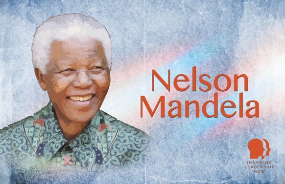

Nelson Mandela
Nelson Mandela, South Africa's first democratically elected president, is a symbol of dedication, patience, and unwavering commitment to justice. Born in 1918, he became a leading figure in the fight against apartheid, leading peaceful protests and eventually embracing armed struggle when peaceful methods proved insufficient. His activism led to his imprisonment for 27 years, during which he endured harsh conditions but refused to renounce his cause.
Mandela's release in 1990, following negotiations with President F.W. de Klerk, marked the beginning of the end of apartheid. In 1994, he became South Africa’s first black president after the country’s first democratic elections. Awarded the Nobel Peace Prize in 1993 for his role in ending apartheid, Mandela's life was defined by his pursuit of freedom, equality, and peace, making him one of the most celebrated leaders in modern history. He passed away on December 5, 2013, at the age of 95.